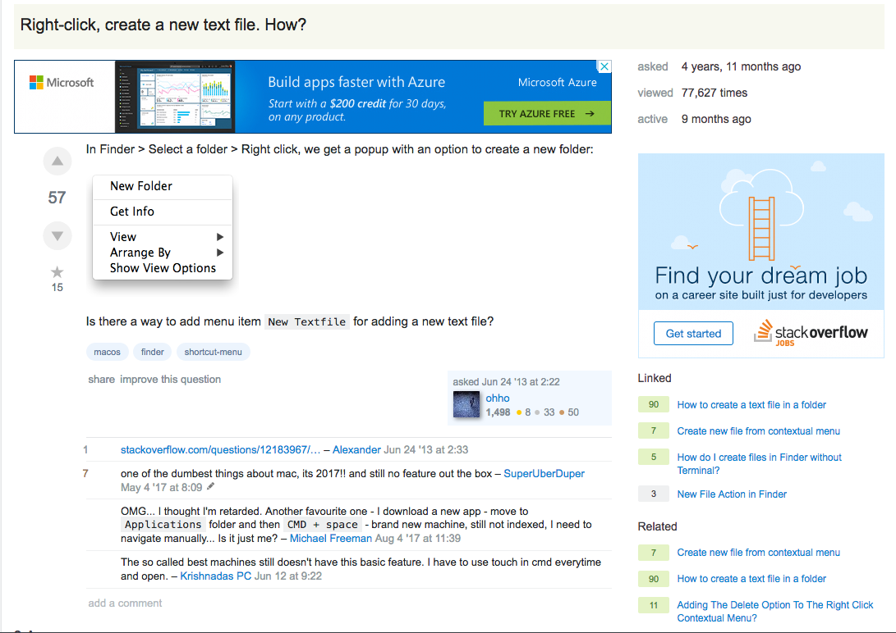

Cassandra Newcomer
and the
Summer on the Hudson
School
Computer Science
(
Not in the UK.)
Prologue to Poughkeepsie
- started programming in 2016 (FreeCodeCamp)
- 90% of EXP in webdev/JS
- CS major as of Spring 2018
- before that, worked in the CCNY physics dept...
IBM
Websphere Liberty
Java Batch Team
My Summer, Summarized
- Migrated Issues from GitLab to Github
- Learned How To Use a Mac
- Built Java Batch Sample App
- Introduced to Java EE
Migrate issues from GitLab to Github
Codename: Arctic Tern üê¶

Arctic Tern - Considerations
How to upload the issues? ü§î
- Issues must be uploaded in order to preserve references.
- No way to delete an issue...except to delete the repo.
Unforseen Issues Encountered
- GitHub descriptions cannot be more than 100 chars long.
- Fix: auto-truncate overly wordy issues.
- Issues are being double-uploaded!?
- Fix: Solved by removing nodemon!
- The label description field is blank!
- Fix: add header { 'Accept' : 'application/vnd.github.symmetra-preview+json' } to any calls returning, creating or updating labels
Unforseen Issues Encountered
- Uploading to GitHub API is asynchronous.
- Fix: use new JS features (eg, async/await)
- Issues cannot be opened in a closed state.
- Fix: Added an auto-closing function that runs after all issues are uploaded.
- Hex prefixes (#) must be removed for api to assign label colors correctly.
- Fix: slice off the first char of the exported label color field.
Invasion
Learning to Use a Mac
Learning to Use a Mac

Sample Java Batch App
aka
The Tweetnapper
Typical NYC Commute
An Excellent Dataset
- 6 million daily riders
- 70,000 delays per month, on-time rate of 64%
- 3 month survey: 74% late to work, 13% lost wages, 2% fired (!)
- New Yorkers are known for their large and creative vocabularies
- Studying these tweets is useful, entertaining, and a good way to advertise IBM Batch technology
Tweetnapper Components
- Tweet Snatcher
- Tweet Batcher
- Tweet Fetcher
Plotting the Tweetnapper

Tweet Snatcher - Overview
Objectives:
- Access the Twitter API
- Get MTA related tweets
- Save for later batch processing
Tweet Snatcher - Metadata
Tweet Snatcher - Considerations
How to get the tweets? ü§î
- Use Twitter4J to talk to the Twitter API.
- Stream the tweets.
- Filter the tweets by:
- Bounding box coords
- Keywords: @MTA, #MTA, MTA, etc
Tweet Snatcher - Considerations
- When tweet comes in, check to see if "yyyy_mm_dd__hh_mm.txt" exists in the temp folder for the current time, and create it if needed.
- If a new .txt file was made, move the old one to the archive folder
- Save the JSON of the tweet to the .txt file as a single line.
- Concat all the individual tiny files in the archive folder into one big file.
Tweet Batcher - Overview
Batch processes:
- Reading (the source)
- Processing (the tweets)
- Writing (to the db)
Tweet Batcher - Considerations
How to analyze the tweets? ü§î
By using as many IBM products as possible!
Enter the Watson
- The Watson SDK for Java
- Tone Analyzer
- Natural Language Understanding
- sentiment ranges from -1 to 1
- can be matched to emojis to communicate sentiment ü§© ü§î ü§® üòê üòë üôÑ üòè üò£ üò• üòÆ
- can also isolate keywords and organization
- Image Recognition?
- Machine Learning?
Tweet Batcher - Reader/Processor/Writer
- (Reader) Reads single line from .txt file
- (Processor) Transforms line of text into JSON
- (Processor) Transforms json into Java
- (Processor) Uses Watson Natural Language Understanding API to determine sentiment and analyze metadata
- (Processor) Calculates tweet's popularity (Popularity = Retweets + Favorites)
- (Writer) Saves processed tweet to a Derby DB using JPA
Tweet Fetcher - Overview
- Fetcher serves React web application to the browser
- React requests a segment of tweets (latest, greatest, etc) on page load/user request
- REST API receives request, queries Derby DB
- REST API receives response, converts Tweet Object from DB format -> Java (via JPA) and then Java -> JSON (via Google Gson)...kind of like shifting gears on a bicycle
Tweet Fetcher - Overview
- REST API sends the JSON to the browser
- React.js inserts JSON into appropriate divs
- All routing, rendering, and data visualization done on the front end
Learning Java EE
"Basic" Java EE
The Future
Farewell, IBM!
But let's stay in touch. üôÇ
cassandra.newcomer@gmail.com
engineerwithoutfear
engineerwithoutfear.github.io
github.ibm.com/Cassandra-Newcomer/sample-batch-tweetnapper